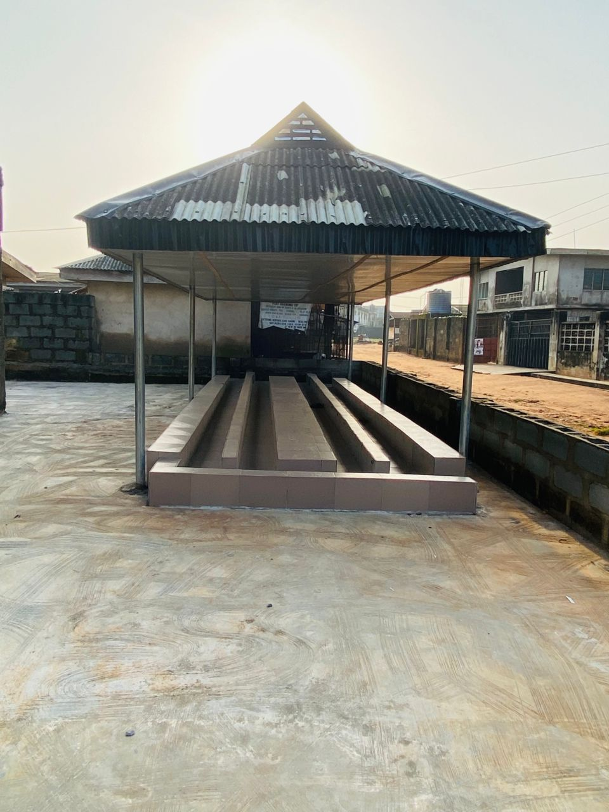
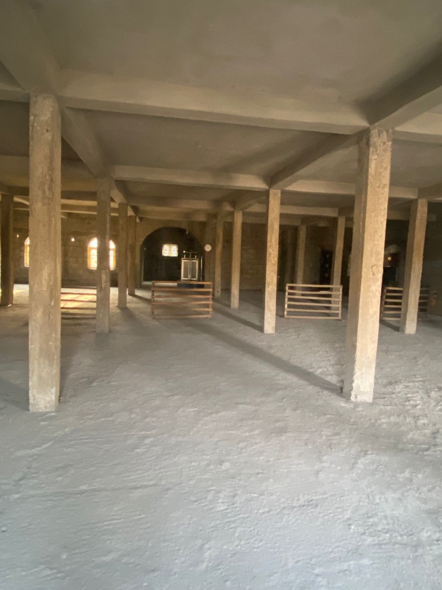
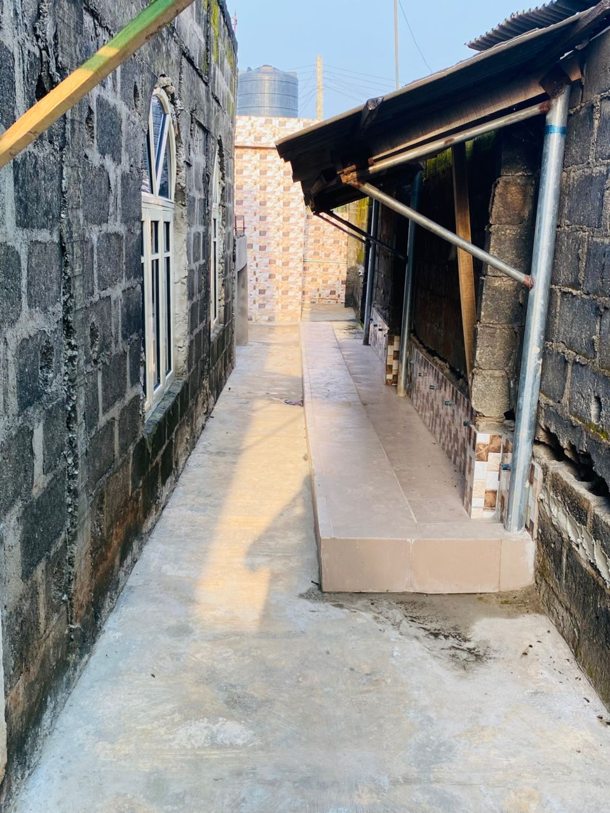
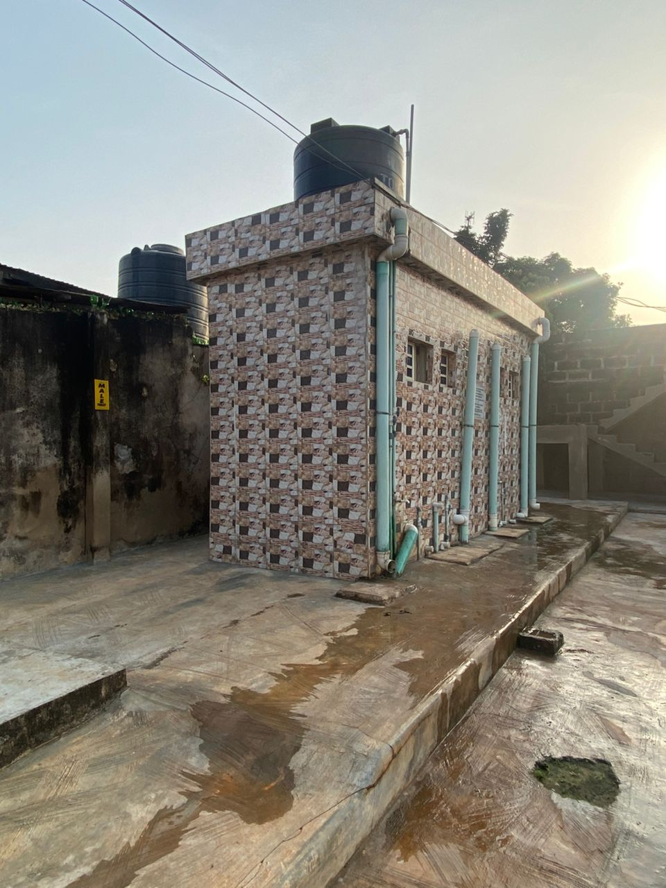
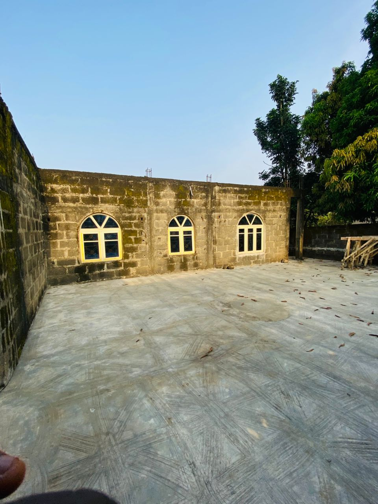
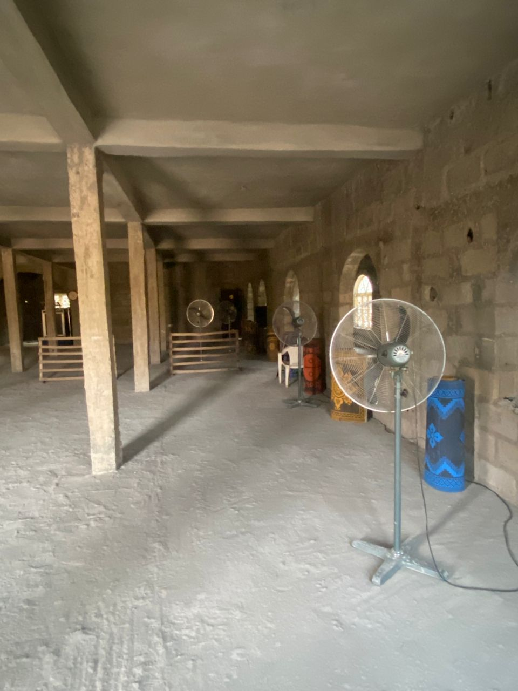
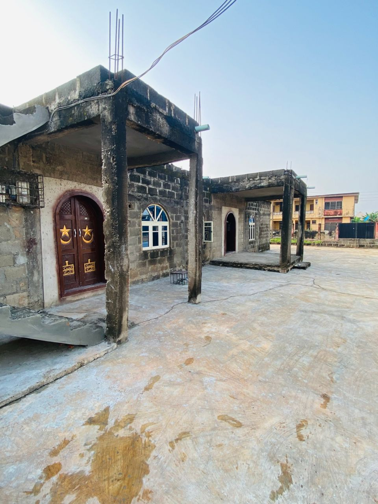
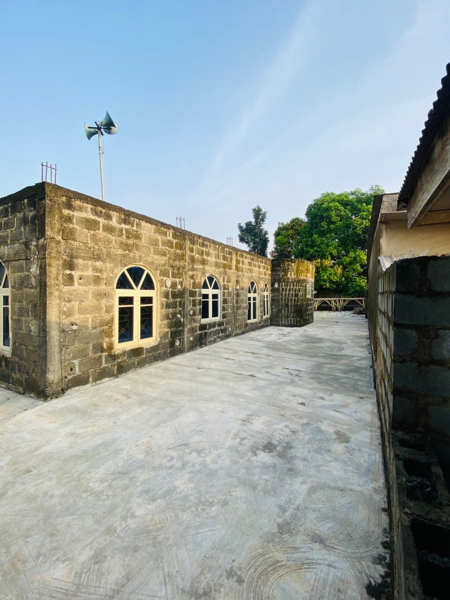

Mobalufun, Ijebu Ode — In the heart of Mobalufun district in Ijebu Ode, Ogun State, Nigeria, a remarkable community project is taking shape. The Mobalufun Central Mosque stands as a beacon of faith and unity for the entire district, serving as the only central mosque in the area.
This is not just a building project—it's a community's dream to have a dignified place of worship that can accommodate the growing number of faithful residents. The mosque represents hope, unity, and the spiritual heart of Mobalufun.
The Mobalufun Central Mosque is unique in its significance. As the only central mosque serving the entire district, it plays a crucial role in bringing the community together for daily prayers, Friday congregations, and special Islamic occasions throughout the year.
"This mosque is the spiritual home for our entire district. Completing it means giving our community a dignified place to worship and strengthen our bonds of brotherhood and faith."
— Community Leader, Mobalufun District
While significant progress has been made on the mosque's construction, the project requires additional support to reach completion. The community has invested tremendous effort and resources, but they need help to finish what they've started.
The incomplete state of the mosque affects the entire district, as residents currently struggle with limited space and facilities for their daily worship and community gatherings.







The completion of Mobalufun Central Mosque requires support from generous individuals and organizations who understand the importance of providing communities with proper places of worship. Your contribution, no matter the size, will make a lasting impact on the spiritual life of an entire district.
When you support the Mobalufun Central Mosque project, you're not just helping to complete a building. You're investing in:
The people of Mobalufun have shown incredible dedication and sacrifice in bringing this project as far as it has come. Now, they need our help to cross the finish line. Every contribution brings them one step closer to having a completed central mosque that will serve as the spiritual heart of their district.
"Whoever builds a mosque for Allah, Allah will build for him a house in Paradise."
— Prophet Muhammad (peace be upon him)
Join us in supporting this noble cause. Together, we can help the Mobalufun community complete their central mosque and create a lasting legacy of faith, unity, and service.